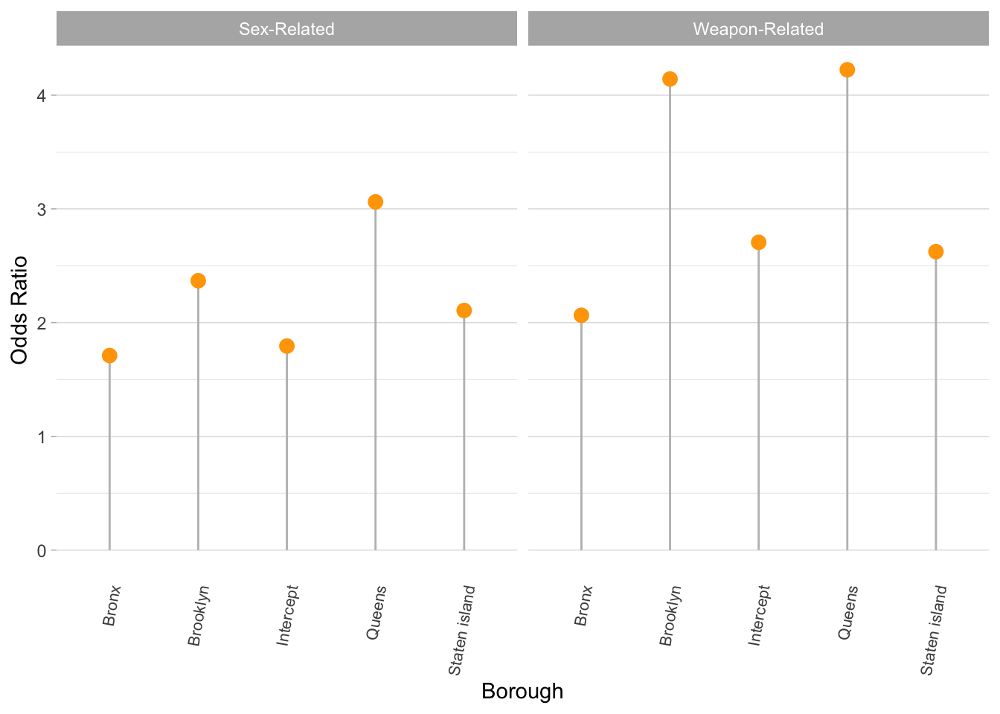

Statistical Analyses
Differences in Length of Crime
Introduction
In one of the exploratory analysis, we found that the average length of time of the reported crime (i.e., time between when it started and when it ended) differed for each felony type (sex-related, drug-related, and weapons-related). Results from that exploratory analysis is included below. We see that sex-related felonies last an average of 19.236 days, drug-related felonies last an average of 0.586 days, and weapons-related felonies last an average of 0.282 days.

We will assess whether this difference is statistically significant. Testing this difference can yield important insights regarding whether victims are disproportionately suffering the burden of certain crimes, in terms of absolute number of days. Finding a significant result may also suggest that certain felonies are more extensive and complicated, potentially more dangerous or violent, or may require more resources to deal with. Lastly, it may indicate that the victims are at a higher risk compared to those involved in other types of felonies.
Data and Methods
We first import the data below and clean up the data. We tidy the data so that Manhattan becomes the reference borough and drug-related felonies become the reference felony. Observations with missing information on when the crime started or when it ended were excluded.
Since we are testing the difference in means between three groups, we should be able to conduct an ANOVA test. To ensure that the assumptions of the ANOVA test are not violated, we test for homogeneity of variances. We used Levene’s test to test homogeneity of variances. We see from the results below that the p-value is less than 0.05. Therefore, the assumption of homogenous variances is not met.
| term | df | statistic | p.value |
|---|---|---|---|
| group | 2 | 903.7685 | 0 |
| 46689 | NA | NA |
We resort to using a non-parametric approach in detecting a difference of means between these three groups by utilizing the Kruskal-Wallis test. Using this test means that we do not make any underlying assumptions about the distribution of the three groups; since these groups potentially come from very different populations, a non-parametric approach seems best for this test.
| statistic | p.value | parameter | method |
|---|---|---|---|
| 6791.359 | 0 | 2 | Kruskal-Wallis rank sum test |
From the test above, it is evident that the p-value is less that 0.05. We conclude that at 5% level of significance, at least one of the average lengths of reported crimes (i.e., time between when the crime started and when it ended) is different among the three felony categories.
Since the Kruskal–Wallis test is significant, we now conduct a post-hoc analysis to determine which crime groups differ from each other level. We use the Dunn test for the post-hoc analysis.
## Comparison Z P.unadj P.adj
## 1 Drug-Related - Sex-Related -75.5637359 0.000000 0.000000
## 2 Drug-Related - Weapon-Related -0.8243442 0.409744 0.409744
## 3 Sex-Related - Weapon-Related 75.8203110 0.000000 0.000000Results and Discussion
The results show that there is a statistically significant difference between the average length of reported felonies for sex-related and drug-related felonies (p < 0.005), as well as for sex-related and weapons-related felonies (p <0.005). However, there isn’t a significant difference between drug-related and weapons-related felonies (p = 0.4097). All together, we have evidence suggesting that victims of sex-related felonies endure longer incidents, compared to victims of drug-related or weapons-related felonies.
The results of these tests suggest that victims of sex-related felonies endure significantly longer incidents compare to victims of drug-related or weapons-related felonies. This makes sense, considering that sex-related felonies include human trafficking, sexual abuse, and other cases in which the length of the crime is often dragged out compared to those within the other two felonies. Given this result, law enforcement, government, and public health officials should dedicate extra resources to prevent sex-related felonies and ensure that their agencies are adequately prepared and capable to resolve and manage sex-related felonies lasting longer periods of time.
Association Between Borough and Crime Occurrence
Introduction
In one of our exploratory analyses, we found that felony rates differed by borough (see below).

Given this result, we decided to formally analyze the association between sex-related, drug-related, and weapons-related felonies and the borough in which the crime occurred; specifically, we looked at whether the occurrence of the felony was higher (or lower) in a particular borough compared to the other boroughs. The importance of examining this association cannot be overstated - determining whether felonies occur more often in a specific borough provides the NYPD and other officials the potential capability of directing their resources toward areas that need them the most.
Data and Methods
Model Statement for the Multinomial Logistic Regression Model
We conducted a multinomial logistic regression to study the association between borough and occurrence of drug-related, sex-related, and weapons-related felonies. The model statement for our research question is included below.
\[ln (\frac{P( crimegroup = sex-related)}{P(crime group = drug-related)}) = \beta_{10} + \beta_{11}(Bronx) + \beta_{12}(Brooklyn) + \beta_{13}(Queens) + \beta_{14}(Staten Island)\]
\[ln(\frac{P(crimegroup = weapons-related)}{P(crime group = drug-related)}) = \beta_{20} + \beta_{21}(Bronx) + \beta_{22}(Brooklyn) + \beta_{23}(Queens) + \beta_{24}(Staten Island)\]
Drug-related felonies was chosen as the reference group among the 3 types of felonies because it tends to be the least serious of the 3 crime groups. Among the boroughs, Manhattan was chosen as the reference group because it is widely thought to be the borough with least crime.
Cross tabulation
We created a data table to organize the rates of drug-related, sex-related, and weapons-related felonies; we stratified the results by borough. From the table, we can see that, in terms of absolute numbers, Brooklyn has the highest incidence of weapons-related and sex-related felonies, while the Bronx has the highest incidence of drug-related felonies.
| Drug-Related | Sex-Related | Weapon-Related | |
|---|---|---|---|
| manhattan | 3566 | 2084 | 3550 |
| bronx | 6312 | 1980 | 4556 |
| brooklyn | 5144 | 2592 | 7278 |
| queens | 2589 | 1693 | 3713 |
| staten_island | 682 | 297 | 655 |
Next, we fit a logistic regression model to the data. We also plot the data into a graph.
| Crime group | Term | Estimate | Standard error | statistic | P value | Odds Ratio |
|---|---|---|---|---|---|---|
| Sex-Related | Intercept | 0.5844049 | 0.0275731 | -19.4813700 | 0.0000000 | 1.793923 |
| Sex-Related | Bronx | 0.5367635 | 0.0377326 | -16.4896410 | 0.0000000 | 1.710462 |
| Sex-Related | Brooklyn | 0.8622320 | 0.0366125 | -4.0486419 | 0.0000515 | 2.368441 |
| Sex-Related | Queens | 1.1189544 | 0.0416796 | 2.6966344 | 0.0070044 | 3.061651 |
| Sex-Related | Staten island | 0.7451797 | 0.0747898 | -3.9327525 | 0.0000840 | 2.106820 |
| Weapon-Related | Intercept | 0.9955120 | 0.0237090 | -0.1897204 | 0.8495282 | 2.706110 |
| Weapon-Related | Bronx | 0.7250480 | 0.0306600 | -10.4865465 | 0.0000000 | 2.064830 |
| Weapon-Related | Brooklyn | 1.4212297 | 0.0298985 | 11.7572104 | 0.0000000 | 4.142211 |
| Weapon-Related | Queens | 1.4406084 | 0.0348954 | 10.4617057 | 0.0000000 | 4.223264 |
| Weapon-Related | Staten island | 0.9647314 | 0.0596248 | -0.6021913 | 0.5470468 | 2.624083 |

Results and Discussion
From the data table and the graph above, we see that:
- The odds of a sex-related felony occurring in Manhattan is 1.79 times the odds of a drug-related felony occurring in Manhattan.
- The odds of a sex-related felony occurring in the Bronx is 1.71 times the odds of a drug-related felony occurring in Manhattan.
- The odds of a sex-related felony occurring in Brooklyn is 2.37 times the odds of a drug-related felony occurring in Manhattan.
- The odds of a sex-related felony occurring in Queens is 3.06 times the odds of a drug-related felony occurring in Manhattan.
- The odds of a sex-related felony occurring in Staten Island is 2.11 times the odds of a drug-related felony occurring in Manhattan.
- The odds of a weapons-related felony occurring in Manhattan is 2.71 times the odds of a drug-related felony occuring in Manhattan.
- The odds of a weapons-related felony occurring in the Bronx is 2.06 times the odds of a drug-related felony occurring in Manhattan.
- The odds of a weapons-related felony occurring in Brooklyn is 4.14 times the odds of a drug-related felony occurring in Manhattan.
- The odds of a weapons-related felony occurring in Queens is 4.22 times the odds of a drug-related felony occurring in Manhattan.
- The odds of a weapons-related felony occurring in Staten Island is 2.62 times the odds of a drug-related felony occurring in Manhattan.
These results suggest a significantly higher odds of a sex-related or a weapons-related felony occurring in all 4 boroughs compared to a drug-related felony occurring in Manhattan. Of note is that a weapons-related felony (OR = 4.22) and a sex-related felony (OR = 3.06) is more likely to occur in Queens compared to a drug-related felony in Manhattan - these odds represent the highest among the boroughs.